I architect product experiences: design systems, information architecture — accessible, traceable, and enjoyable systems.
Almost two decades of enterprise UX, from data security to business telephony to regulated healthcare. Design and engineering expert in internal dashboards, CLIs, versioned design systems, public-facing marketing and management tools, and more.
Self-hosted memory and identity platform for persistent AI agents: dashboard, CLI, versioned design system, and integrations over a Postgres/pgvector store. Every line designed by me and written by agents under my direction.
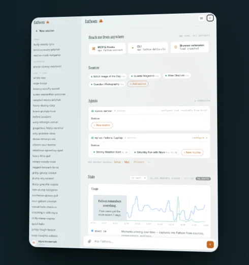
Ground-up redesign of a decade-old provider search used by tens of millions of Medicaid, Medicare, and Commercial members. Led research, content, and design across a three-phase delivery.
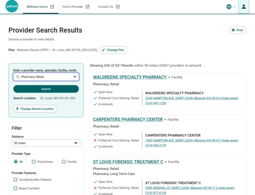
Concept work across member experience: dashboards, digital delivery, ID cards, progressive display patterns, recent claims, and secure messaging.
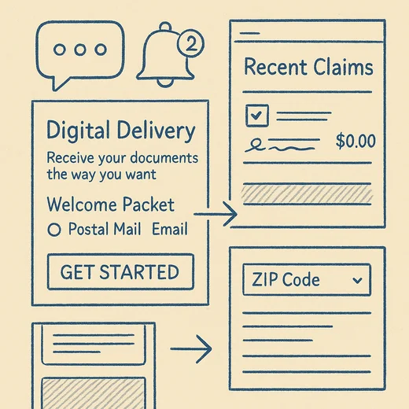
Led end-to-end design of Find a Provider for tens of millions of members — user satisfaction up 40%. Designed GNAT, a no-code plan-site builder that cut setup 60% and has run for four years. Fondue design system, custom a11y tooling, conversational Medicare search. Read the case study →
Customer portals and lead-gen tools for an enterprise SD-WAN and cybersecurity provider; WebRTC visual auto-attendant.
Faculty Profile System database migration; award-winning HTML5 data visualization (TAIR 2015). Read the case study →
Unified Communications admin portal and interactive network maps for an enterprise telecom. Read the case study →
Led design and development of Style Browser, an interactive costume catalog and video showcase — created all content and built the installer and disk image for a 30,000-copy DVD shipment. Read the case study →
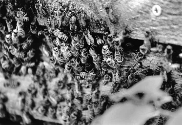
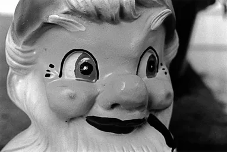
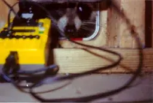
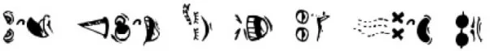
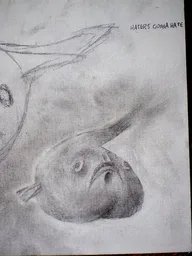
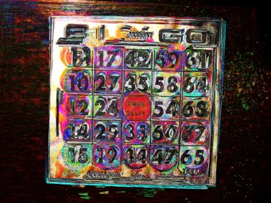
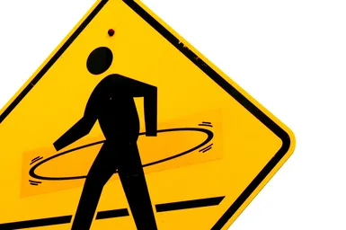
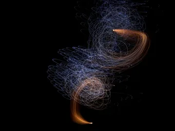
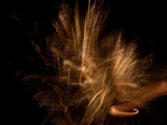
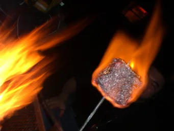
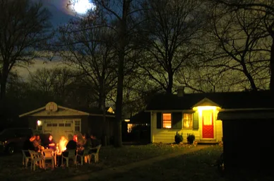
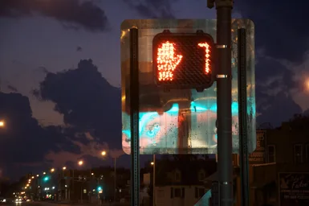
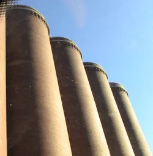
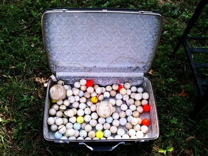
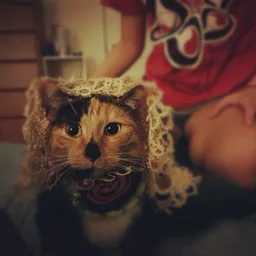
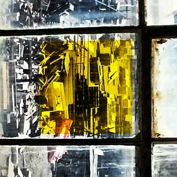
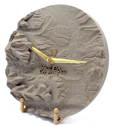
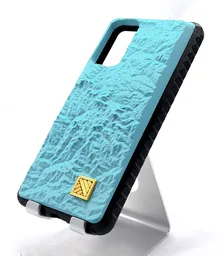
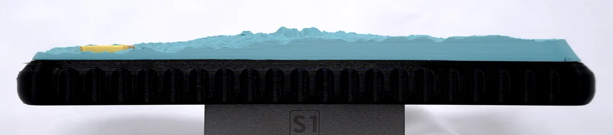
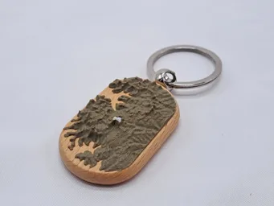
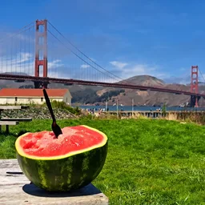
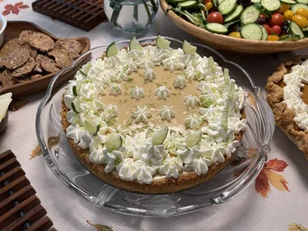
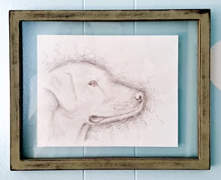
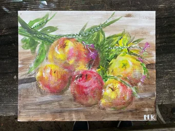
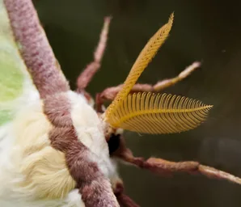
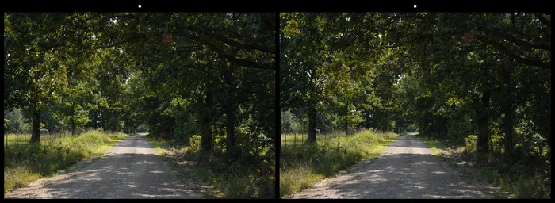
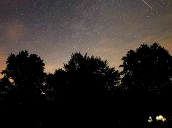
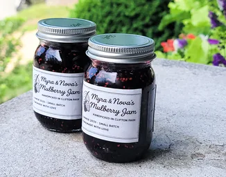
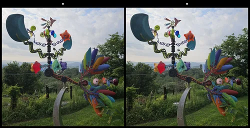
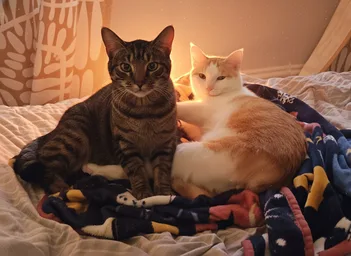
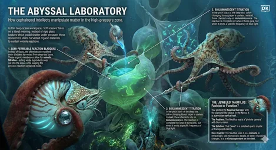
Independent builds — live, used, and maintained.
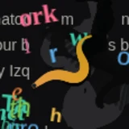
A real C. elegans — its entire locomotion circuit simulated neuron by neuron in WebAssembly — living in a bookmarklet. Click it on any page and the worm crawls out and eats the words; sprinkle the page's own letters to feed it, and keep it fed or it dies. Drag the button to your bookmarks bar to take him anywhere.
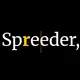
Speed reading for eBooks, PDFs, and plain text, built on enhanced RSVP — words arrive one at a time at your eye's fixation point, so there's no scanning, only reading. An innovative throttle control keeps the pace right where your attention is.
A physically simulated wind chime — damped-pendulum clapper, tuned pentatonic tubes, synthesized live in the browser — and a great ambient sound generator: it taps directly into local National Weather Service wind data, so the chimes ring with the weather outside your window.
Text-to-speech that's completely local, completely private, and completely unlimited — your words never leave the browser.
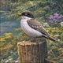
Learn birds by visual, name, and sound. You don't win this fun quiz — the objective is to increase accuracy over time. Three regional bird sets available.
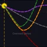
A sobering choose-your-own… adventure story about democracy's past and possible futures.
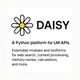
A 2023 deep dive into LLMs and their ability to use tools, follow instructions, store memories, and plan complex tasks.
Everything else, source included
Physical products you never knew you wanted or needed — designed, printed, and shipped from St. Louis. Proof the craft isn't confined to screens.